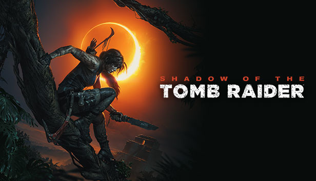

The Last of Us Part II

A The Last of Us Part II egy 2020-as akció-kalandjáték, amelyet a Naughty Dog fejlesztett és a Sony Interactive Entertainment adott ki. A játékos egy posztapokaliptikus világban kalandozik...
Shadow of the Tomb Raider
A Shadow of the Tomb Raider folytatja Lara Croft kalandjait veszélyes dzsungelekben és ősi romok között...
Plague Tale: Requiem

Az A Plague Tale: Requiem egy akció-kalandos lopakodós videojáték, amelyet az Asobo Studio fejlesztett és a Focus Entertainment adott ki. A játékban a játékos továbbra is Amicia irányítását veszi át, miközben szembenéz ellenségekkel és veszélyekkel egy sötét, történelmi világban. A játék nagymértékben hasonlít az első részhez, de több fejlesztést kínál, például új fegyvereket és stratégiákat...